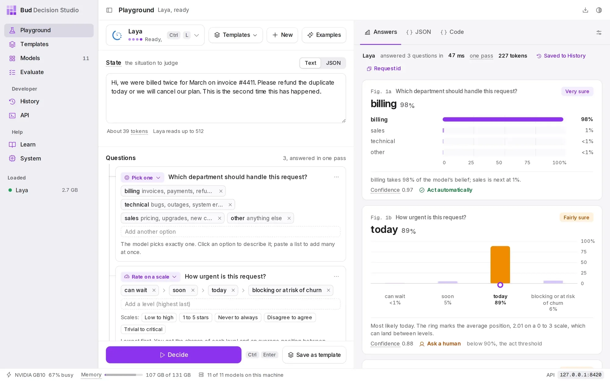
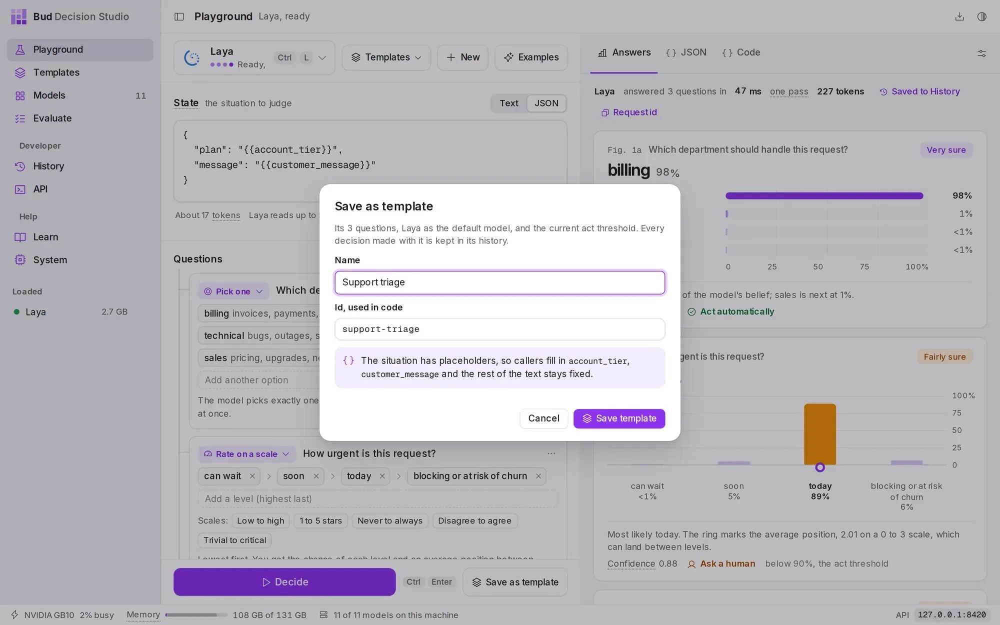
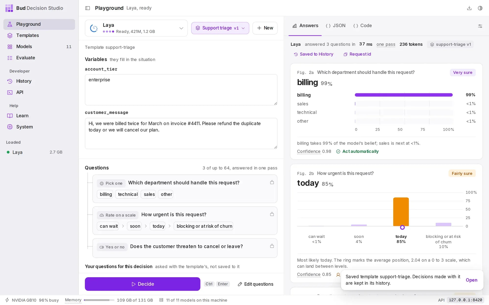
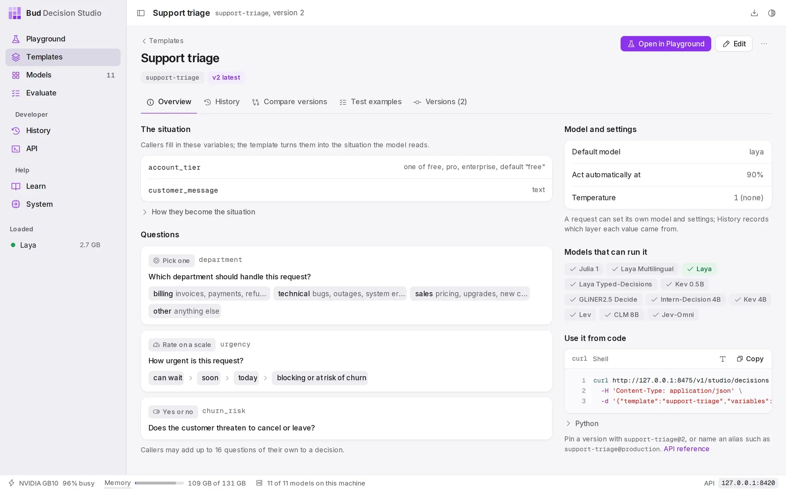
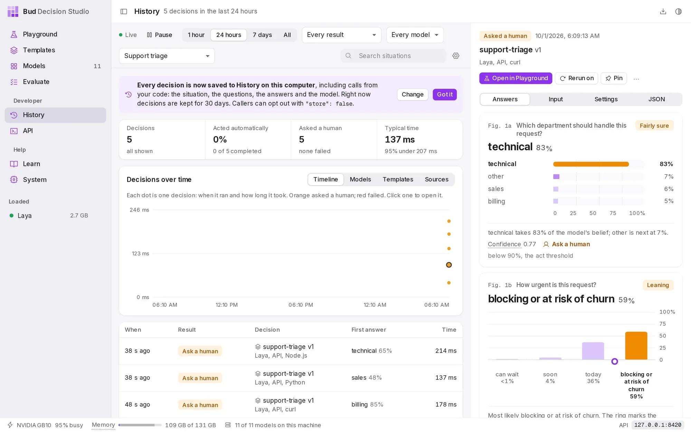

DocsGuides
Build a support-triage template
This guide builds a template that routes a support ticket to a team, rates its urgency and flags customers who might leave. You try the questions in the app, save them as a template with two variables, then call it from your code and act on the answers.
Before you start#
You need the studio open with a model loaded. This guide uses Laya, a small English model that loads in seconds and answers support questions well; any text model works the same way. If you have not installed the studio yet, start with Installation.
The finished template is called support-triage. It takes two variables, the customer's message and their plan, and asks three questions:
| Question | Type | Answers |
|---|---|---|
| Which department should handle this request? | Pick one | billing, technical, sales, other |
| How urgent is this request? | Rate on a scale | can wait, soon, today, blocking or at risk of churn |
| Does the customer threaten to cancel or leave? | Yes or no | yes, no |
Try the questions in the Playground#
The Playground opens on a support ticket example, with these three questions already written. That is the quickest start: adjust them to your own teams and levels, and press Decide to see how the model answers a real ticket.
- Open the Playground from the sidebar. The model button at the top left shows the loaded model; press Ctrl L to choose another.
- Check the situation. The State box holds the ticket. Paste one of your own to see how the questions hold up.
- Check the questions. Each question has a type, its instructions and its options. Option descriptions, such as "invoices, payments, refunds", help the model more than the option names.
- Press Decide (Ctrl Enter). Each answer appears as a chart, with the model's certainty and whether it would act automatically or ask a person.

Turn the specifics into variables#
A template keeps the questions fixed and lets callers fill in the details. Replace the parts of the situation that change from ticket to ticket with {{placeholders}}; each placeholder becomes a variable.
- Switch the State box to JSON with the toggle above it, so the plan and the message stay separate fields.
- Write the shape of the situation with placeholders, as in the block below this list.
- Press Save as template. Name it "Support triage"; the id used in code becomes
support-triage. The dialog lists the variables it found. - Press Save template. The template stores the questions, Laya as its default model and the current act threshold.
{ "plan": "{{account_tier}}", "message": "{{customer_message}}"}
account_tier and customer_message become variables that callers fill in.Run it in the app#
After saving, the Playground switches to the template: the left side becomes a form with one field per variable, and the template's questions are locked, so every decision asks exactly the same thing. Fill in a message and a plan, and press Decide.
Below the locked questions you can still add questions of your own for one decision; they are asked alongside the template's and never saved to it. To change the template itself, press Edit questions, then Save version 2.

Call it from your code#
Every call sends the template id and the variables, and gets back the answers. The response is the stored decision: its id finds it in History, and the response headers repeat it as x-basal-decision-id.
metadata is optional. It is stored with the decision and never sent to the model, so it is the place for your own ids: here, the ticket number.
The example uses the studio's default address, 127.0.0.1:8420. The API page in the app shows the exact address of your studio. The response on the right is shortened; Decisions describes every field.
/v1/studio/decisionscurl -s http://127.0.0.1:8420/v1/studio/decisions -d '{ "template": "support-triage", "variables": { "customer_message": "The export button has returned a 500 error since this morning. Our month-end close is blocked.", "account_tier": "enterprise" }, "metadata": {"ticket_id": "T-5120"}}'import httpxstudio = httpx.Client(base_url="http://127.0.0.1:8420/v1/studio", timeout=120)def triage(ticket_id: str, message: str, tier: str) -> dict: r = studio.post("/decisions", json={ "template": "support-triage", "variables": {"customer_message": message, "account_tier": tier}, "metadata": {"ticket_id": ticket_id}, }) r.raise_for_status() return r.json()d = triage("T-5120", "The export button has returned a 500 error since this morning. " "Our month-end close is blocked.", "enterprise")const base = "http://127.0.0.1:8420/v1/studio";async function triage(ticketId, message, tier) { const res = await fetch(`${base}/decisions`, { method: "POST", headers: { "Content-Type": "application/json" }, body: JSON.stringify({ template: "support-triage", variables: { customer_message: message, account_tier: tier }, metadata: { ticket_id: ticketId }, }), }); const d = await res.json(); if (!res.ok) throw new Error(`${d.error.code}: ${d.error.message}`); return d;}const d = await triage("T-5120", "The export button has returned a 500 error since this morning. " + "Our month-end close is blocked.", "enterprise");{ "id": "dec_01M3TEDB7GJBA4M0Y173GNGAKS", "object": "decision", "status": "completed", "template": {"id": "support-triage", "version": 1, "ref": "support-triage", "resolved_from": "latest", "attribution": "explicit"}, "model": "laya", "answers": { "department": { "type": "choice", "choice": "technical", "probabilities": {"billing": 0.0513, "technical": 0.8261, "sales": 0.0556, "other": 0.067}, "confidence": 0.7681, "decision": "technical", "top_probability": 0.8261, "certainty": 0.8261, "act": false, "origin": "template" }, "urgency": { "type": "score", "score": 2.526, "legend": {"0": "can wait", "1": "soon", "2": "today", "3": "blocking or at risk of churn"}, "probabilities": {"0": 0.0098, "1": 0.0401, "2": 0.3644, "3": 0.5857}, "confidence": 0.526, "decision": "3", "top_probability": 0.5857, "certainty": 0.5857, "act": false, "origin": "template" }, "churn_risk": { "type": "noul", "noul": 0.1031, "probabilities": {"false": 0.8969, "true": 0.1031}, "decision": "no", "top_probability": 0.8969, "certainty": 0.8969, "act": false, "origin": "template" } }, "act": false, "needs_review": ["department", "urgency", "churn_risk"], "settings": {"act_threshold": 0.9, "temperature": 1.0, "questions": {}, "sources": {"act_threshold": "template", "temperature": "studio"}}, "usage": {"input_tokens": 218, "output_tokens": 0}, "timing": {"queue_ms": 0.0, "load_ms": 0.0, "model_ms": 73.4, "total_ms": 91.1}, "source": {"surface": "api", "endpoint": "/v1/studio/decisions", "format": "studio", "client": "curl", "request_id": "req_89fd5afa1cb448e683173cbc8a9b81ba", "attempt": 0, "retry_of": null}, "metadata": {"ticket_id": "T-5120"}, "store": "full", "expires_at": 1793407153, "error": null}Act on confident answers#
Each answer has act: true when its certainty reached the template's act threshold, 0.9 here. The decision's own act is true only when every answer acts, and needs_review lists the ones that did not.
In the response above the model leans the right way on every question (technical, blocking, no churn threat), but none of the three answers is 90% sure, so the whole ticket goes to a person. That is the threshold doing its job: it sends a ticket to a person rather than routing it on a guess.
A common shape is to act on what is certain and queue the rest, with the model's best guesses attached so the reviewer starts from them:
| Field | Use it for |
|---|---|
act |
Route automatically when true. |
needs_review |
The questions a person should check. |
answers. |
The best guess for each question, even when it did not act. |
id |
The link to the decision in History, where the reviewer can label the right answers. |
To automate more, lower the threshold for the questions you trust, per question, in the template's settings; Probabilities, certainty and acting explains how, and Improve a template safely shows how to check a change before it reaches production.
d = triage(ticket_id, message, tier)if d["act"]: assign(ticket_id, team=d["answers"]["department"]["decision"])else: queue_for_review(ticket_id, decision_id=d["id"], check=d["needs_review"], suggested={k: a["decision"] for k, a in d["answers"].items()})const d = await triage(ticketId, message, tier);if (d.act) { assign(ticketId, { team: d.answers.department.decision });} else { queueForReview(ticketId, { decisionId: d.id, check: d.needs_review, suggested: Object.fromEntries(Object.entries(d.answers).map(([k, a]) => [k, a.decision])), });}Handle mistakes#
A request the template cannot accept is refused before any model runs, with every problem listed at once. A misspelled variable name is reported with the name you probably meant, and the missing variable is reported beside it.
These errors are mistakes in the request, so retrying will not help; fix the request. Call the studio from your code lists which errors are worth retrying.
/v1/studio/decisionscurl -s http://127.0.0.1:8420/v1/studio/decisions -d '{ "template": "support-triage", "variables": {"customer_mesage": "Refund the duplicate charge.", "account_tier": "pro"}}'{ "error": { "type": "invalid_request_error", "code": "unknown_variable", "message": "This template has no variable 'customer_mesage'. Did you mean 'customer_message'?", "param": "variables.customer_mesage", "details": [ {"code": "unknown_variable", "param": "variables.customer_mesage", "message": "This template has no variable 'customer_mesage'. Did you mean 'customer_message'?"}, {"code": "missing_variable", "param": "variables.customer_message", "message": "customer_message is required (a string of up to 20,000 characters)."} ], "request_id": "req_49be1540a057422996d5fe6f88bfc1ee", "decision_id": null }}Give a variable a type#
The Playground saves every placeholder as free text. account_tier should only ever be one of three plans, so give it a list of allowed values and a default. The change is a PATCH with only the fields that change, and it saves version 2; version 1 stays exactly as it was.
| Field | Value |
|---|---|
enum |
The allowed values. Anything else is refused with invalid_variable. |
default |
Used when a caller leaves the variable out. |
note |
Why this version was saved; shown in the version history. |
The response is shortened to the fields that show the result. A plan that is not on the list is now refused before the model runs.

account_tier now shows its three allowed values and its default, and the panel on the right shows how to call it from code./v1/studio/templates/{id} curl -s -X PATCH http://127.0.0.1:8420/v1/studio/templates/support-triage -d '{ "variables": { "account_tier": {"type": "string", "enum": ["free", "pro", "enterprise"], "default": "free"} }, "note": "account_tier is one of the three plans"}'{ "id": "support-triage", "object": "template", "version": 2, "change": "new_version", "note": "account_tier is one of the three plans", "aliases": {"latest": 2}, "warnings": []}/v1/studio/decisionscurl -s http://127.0.0.1:8420/v1/studio/decisions -d '{ "template": "support-triage", "variables": {"customer_message": "Refund please.", "account_tier": "premium"}}'{ "error": { "type": "invalid_request_error", "code": "invalid_variable", "message": "account_tier must be one of free, pro, enterprise; got 'premium'.", "param": "variables.account_tier", "details": [ {"code": "invalid_variable", "param": "variables.account_tier", "message": "account_tier must be one of free, pro, enterprise; got 'premium'."} ], "request_id": "req_d821db143a794a368ab542ac35fb5089", "decision_id": null }}Review the decisions in History#
Every call above is in History, with the ticket's message, the answers and the template version. Filter by the template to see its decisions on their own; the ones that asked a person are marked Ask a human. From a decision you can label the right answers, rerun it on another model, or open it in the Playground.

Next steps#
- Improve a template safely: label decisions, turn them into test examples, save a better version and promote it with an alias.
- Templates and versions: every field a template holds, and how versions, aliases and extensions work.
- Call the studio from your code: retries, idempotency keys and slow model starts.